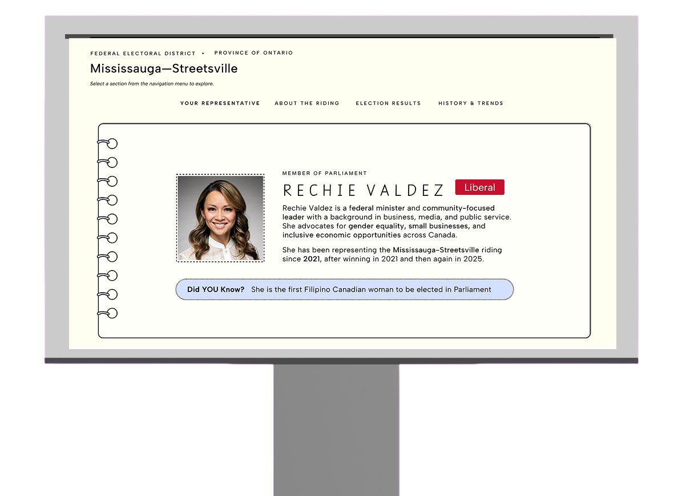
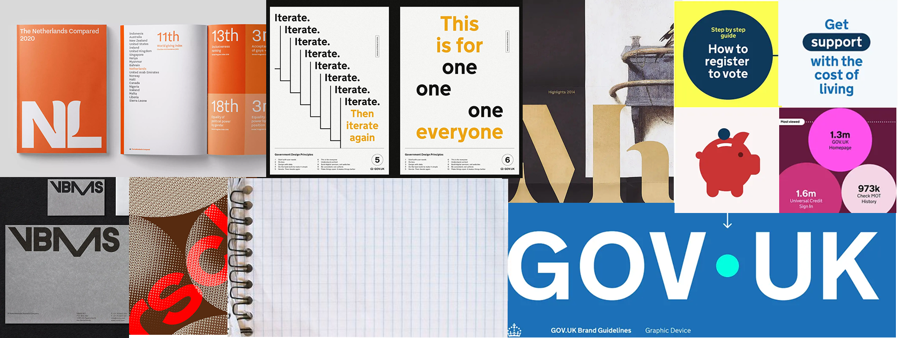
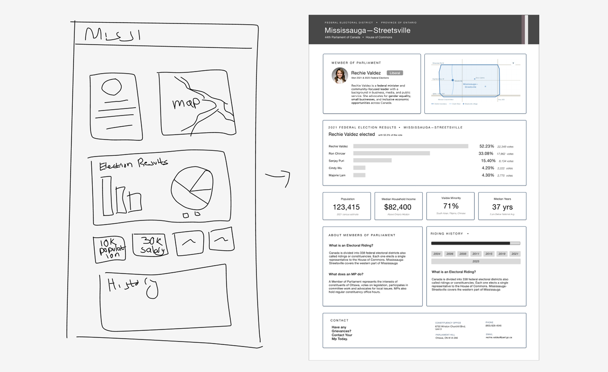
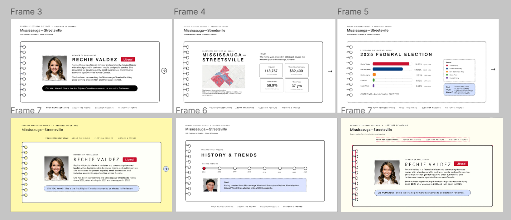
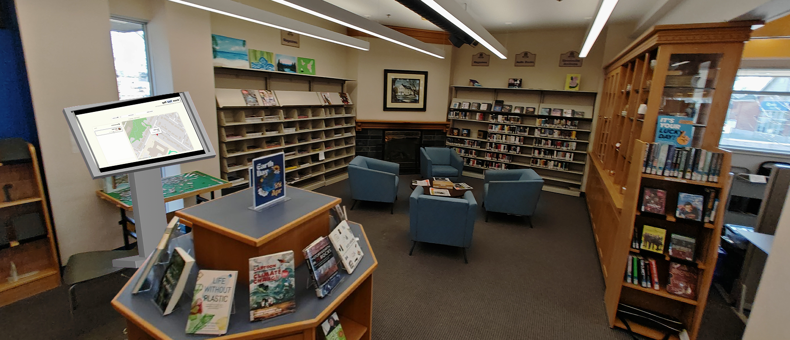

Know Your Rep: A Library Display
Project Overview
Description
Know Your Rep is a library kiosk installation exploring how civic data can be transformed into a friendly, community-centered interactive learning experience. Built from a previous project called Know Your MP, the system reimagines political and civic information as a spatial, exploratory kiosk inside a library environment.
This is a high-fidelity prototype focusing on one district, designed to explore interaction, structure, and visual system at a detailed level.
Problem
Local political information is often not well understood, and many people are not aware of their representatives or how their riding works. Existing systems present this data in ways that are not engaging or easy to navigate.
Goals
To make civic information more accessible by breaking complex data into clear, structured sections. I aimed to improve navigation and engagement through an experience that reduces cognitive overload.
Inspiration
Project Origin
Inspired by OpenParliament, which structures Canadian political data through APIs. This led to Know Your MP, a previous map-based project exploring MPs and electoral districts.
This installation builds on that work by reusing its dataset and expanding it into a spatial kiosk. The "Your Rep" section is preloaded with the user's district, linking directly into the visualization.
Project Evolution
This project was initially inspired by OpenParliament, which compiles Canadian political information through structured data and APIs. Using its API made me think about how complex information can be simplified and made more accessible through design.
This led to my earlier project, Know Your MP — a map-based prototype that allows users to explore Members of Parliament and their electoral districts. Know Your Rep takes that idea further, placing it in a physical environment designed for casual public discovery.
Research
Reference Review
Reviewed Government of Canada design guidelines and official political sources, including Elections Canada, the House of Commons, and major party websites (Liberal and Conservative). This grounded the visual and information hierarchy in familiar civic contexts while identifying gaps in accessibility and clarity.
Moodboard
I compiled a moodboard to explore visual direction and establish the specific visual language I wanted to convey.

Design Process
Initial Drafts
Early sketches were used to explore layout ideas and core interactions, focusing on how civic data — riding boundaries, representative profiles, and voting history — could be represented in a kiosk format. This stage helped define the overall spatial structure before committing to digital layouts.

User Feedback
Users felt the single-page layout was too dense, hard to navigate, and not efficient for casual viewing. They suggested clearer navigation options and more interactivity. A key insight: if you are going to present civic information, make it visually interesting — not just complete.
Revising Layouts
Low and mid-fidelity wireframes translated sketches into structured screens. This stage focused on hierarchy, information placement, and interaction patterns without visual styling — allowing rapid iteration on layout and functionality before applying the visual system.

Resolution
Reflection
- This was my first time designing for a physical, spatial installation context — it pushed me to think about proximity, scale, and public interaction in a way screen design rarely requires.
- Reusing the Know Your MP dataset taught me how a strong data foundation can support multiple design expressions across different form factors.
- User feedback was a turning point — it clarified that civic data doesn't need to be dry, and that engagement and clarity can coexist.
- This project deepened my interest in information architecture and how spatial, environmental design can lower barriers to civic participation.
